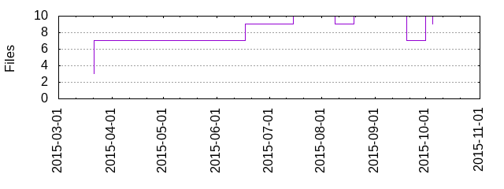

Files
General
Activity
Authors
Files
Lines
Tags
Total files
9
Total lines
641
Average file size
2343.67 bytes
File count by date

Extensions
Extension
Files (%)
Lines (%)
Lines/file
3 (33.33%)
94 (14.66%)
31
js
2 (22.22%)
316 (49.30%)
158
json
1 (11.11%)
54 (8.42%)
54
md
3 (33.33%)
176 (27.46%)
58